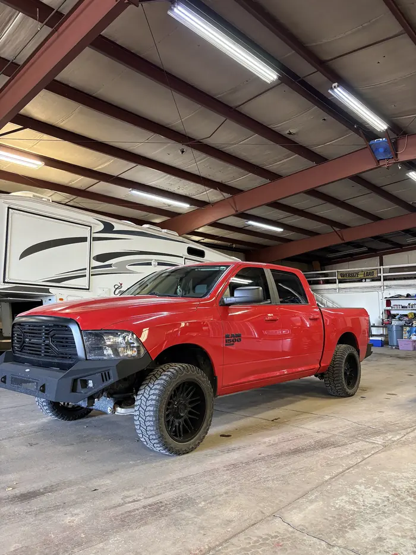
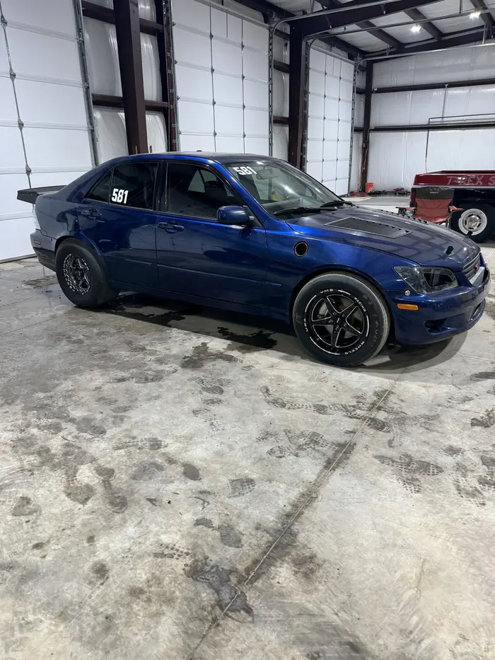
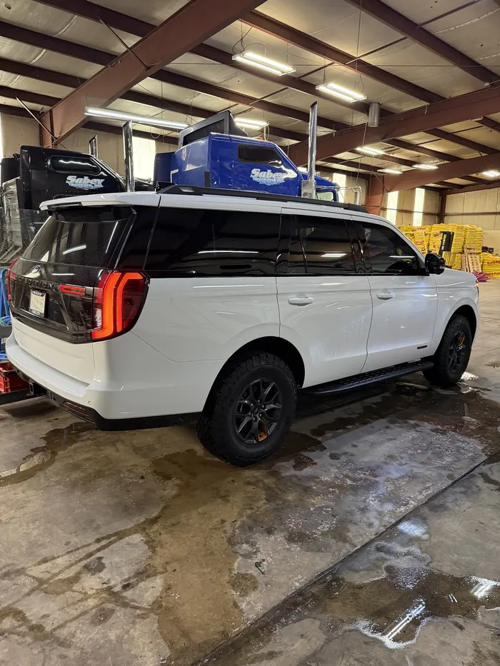
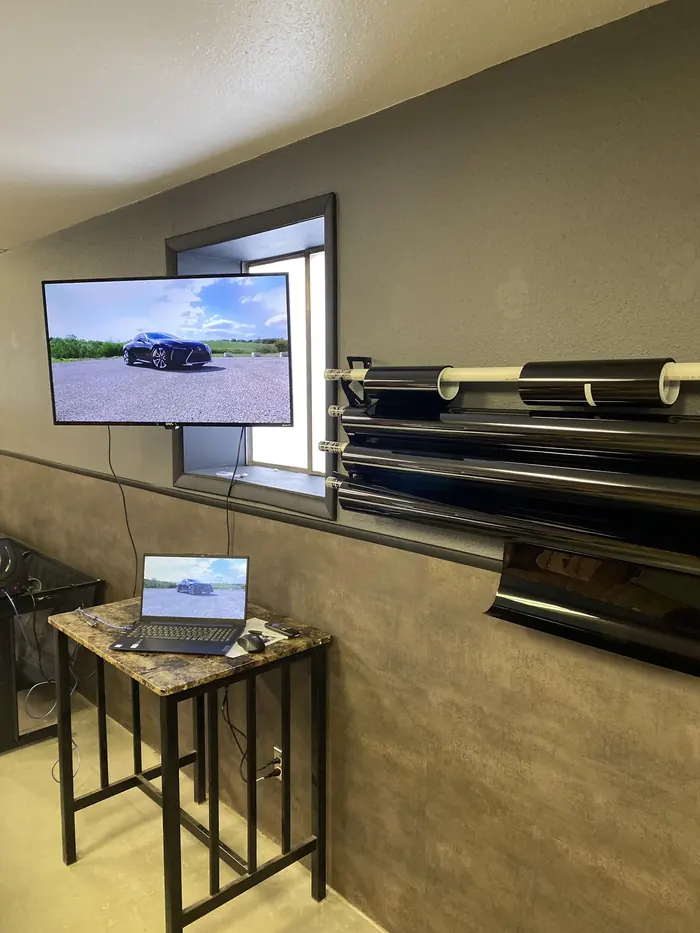
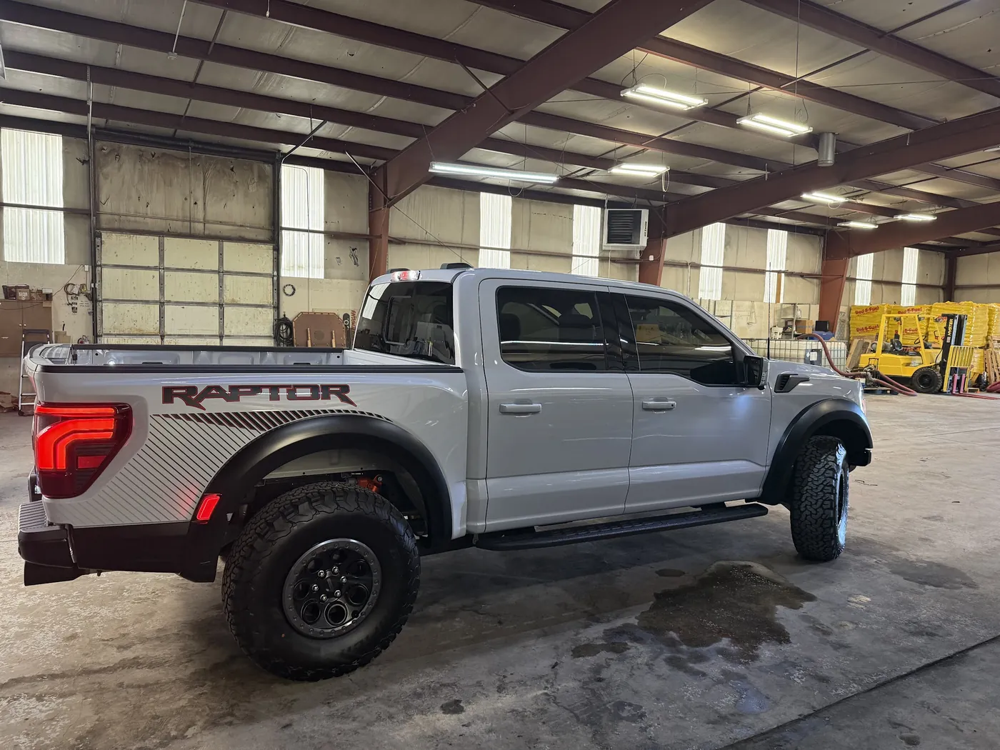
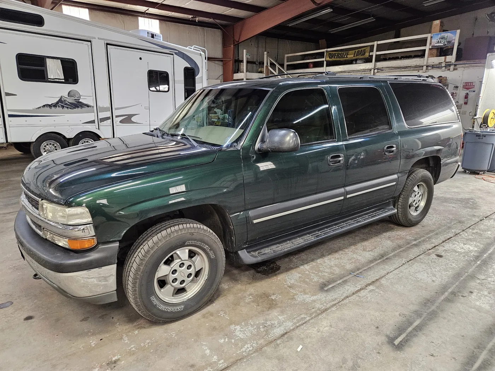
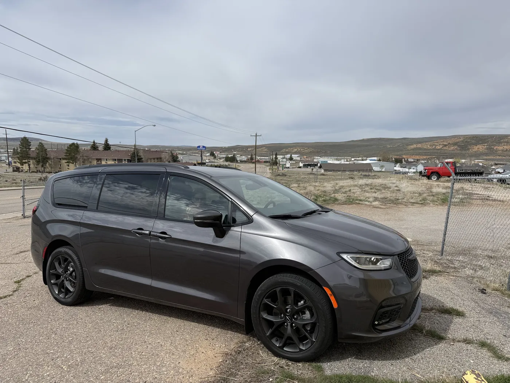
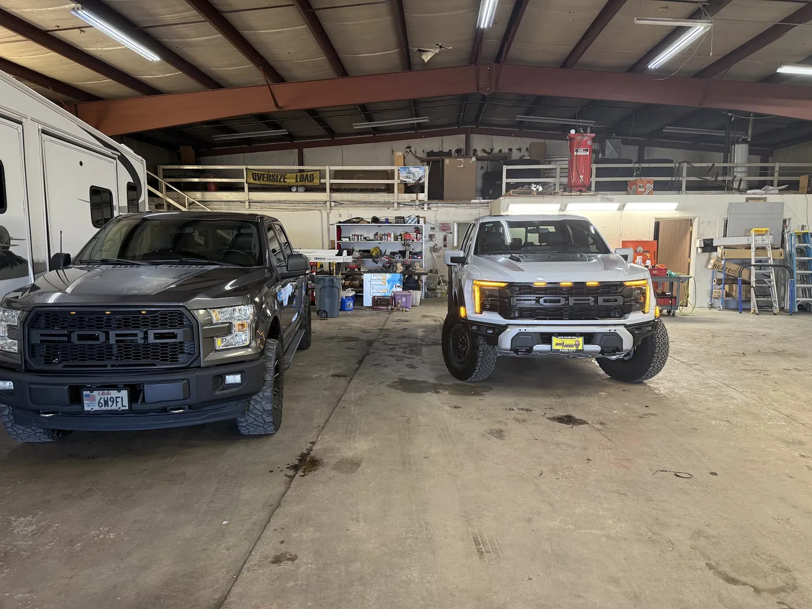
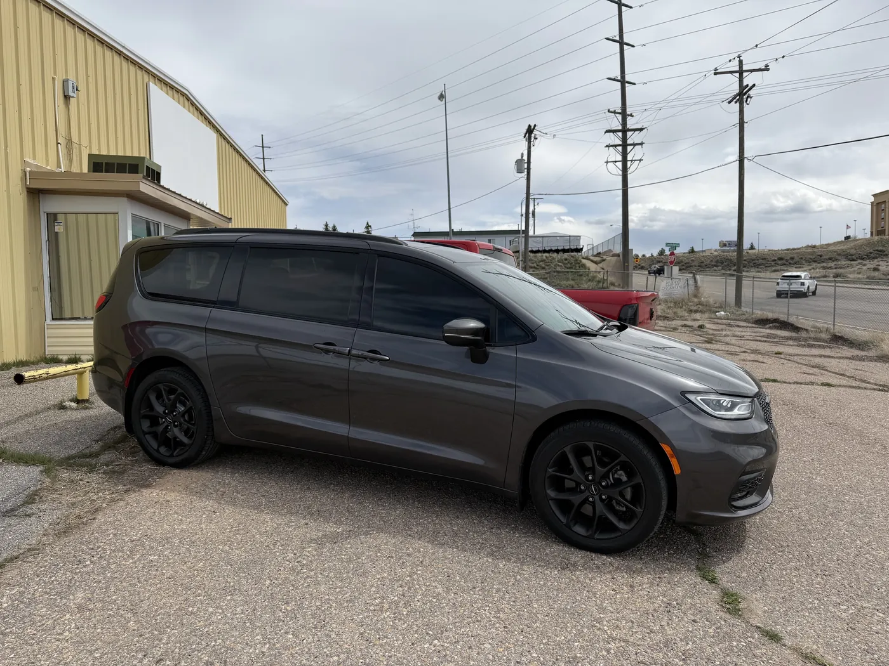
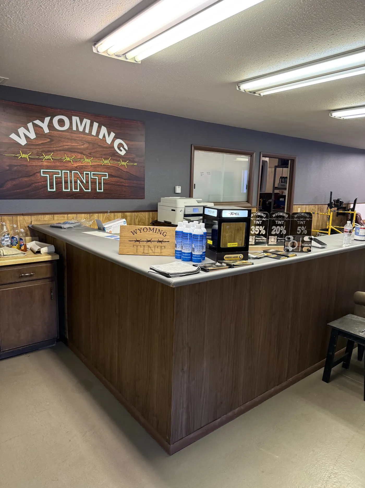

Wyoming Tint, window tinting in Evanston, WY
Window tint in Evanston. No more driving to Utah for it.
Wyoming Tint is a tint shop on Wasatch Road in Evanston. We put XPEL window film on cars, pickups, SUVs, homes and storefronts for people from Evanston, Lyman, Mountain View, Bear River and the rest of Uinta County. Most vehicles go home the same day.
-

Truck and SUV tint
Half the vehicles in this town are pickups, so we do a lot of them. Fronts matched to factory privacy glass, full wraps on new trucks, and Suburbans or Expeditions that need the back half done too.
-

Car tint
Sedans, coupes and minivans. We cut each piece to your glass and shrink it to fit the curve, so the edges stay tight and you don't get light gaps at the top of the window.
-

Windshield brow strips
A strip across the top of the windshield takes the edge off sunrise on I-80 and low winter sun on the way home. It runs along the top of the glass where Wyoming law allows it.
-

Home and business window film
Solar film for south and west windows, privacy film for offices, and glare control for storefronts. The same owners run Flexible Finishes, an architectural film company that has done commercial glass all over Utah and the Rocky Mountain area.
Pick your shade.
Tint is sold by how much light it lets through. Lower number, darker glass. The counter at the shop has 35, 20 and 5 percent samples you can hold up. Here's a preview.
Legal on front side windows in Wyoming.
Recent work out of the Evanston shop.
- Ram 1500

F-150 Raptor
Chevy Suburban- Blue sedan, all sides

Chrysler Pacifica
Two F-150s, same day- Ford Expedition

Pacifica, back half
"Chris did an Amazing tint job on my GMC!! Appreciate not having to drive to Utah, and it was done the same day."
Kerri P., Google review
"They have completed 5 vehicles for me so far, and will be doing any other tint work I may need."
Loni B., Google review
"Joel was super great to deal with! He got my truck in and finished in a very timely manner, with very competitive prices."
Lane S., Google review
"Great experience, truck looks great. Finally good window tint in Evanston!"
Delaney R., Google review

Come by the shop.
We're at 246 Wasatch Road in Evanston. The bay is big enough for lifted trucks, RVs and a couple of vehicles at once, so we're not squeezing your pickup into a one-car garage.
Installs are by appointment, Tuesday through Saturday, 9 to 5. Call or text the year, make and model and we'll give you a price and the next open day. A lot of folks get in the same week.
- Evanston
- Lyman
- Mountain View
- Fort Bridger
- Bear River
- Kemmerer
- Uinta County
Questions people ask before they book.
How dark can I go in Wyoming?
Front side windows have to let in at least 28% of light, and the windshield can only take a strip across the top. How dark the back can go depends on whether it's a car or a truck, SUV or van. We'll tell you what's legal for yours before anything goes on the glass.
How long does it take?
Most cars and trucks are done the same day. One customer had all his windows finished in an hour and a half. Leave the windows rolled up for a few days while the film cures.
What film do you use?
We're an authorized XPEL dealer and install XPEL PRIME window film. It blocks UV, cuts heat and glare, and carries XPEL's manufacturer warranty.
Can you match my factory rear glass?
Yes. A lot of trucks and SUVs come with dark privacy glass in back and clear glass up front. We match the fronts as close as the law allows so the truck looks even from the side.
Do you tint houses and businesses?
We do. Solar film for homes, plus privacy and glare film for offices and storefronts. Our sister company Flexible Finishes handles larger architectural jobs.
Do I need an appointment?
Yes, installs are by appointment so each vehicle gets the time it needs. Call or text (307) 444-1194 and we'll find a day, often that same week.
Get a free quote.
Call or text and you'll talk to the people who do the install.
(307) 444-1194- Hours
- Tue to Sat, 9 AM to 5 PM
Closed Sunday and Monday